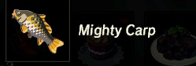

The ugly brother of rock-hard food. Although hard to look or even smell at, this is a great source of energy.
Made from high quality ingredients found in the wild, and of course, love. It might not look edible, but eating it won't hurt...probbably.


These ingredients are very easy to get. You can go to your nearest pond a find some fish. Fight any bokoblin to the death and get its horn.
And if you want to add some extra crunchiness to your dish, you can cut some grass or lift some rocks and you'll sure find some crickets.